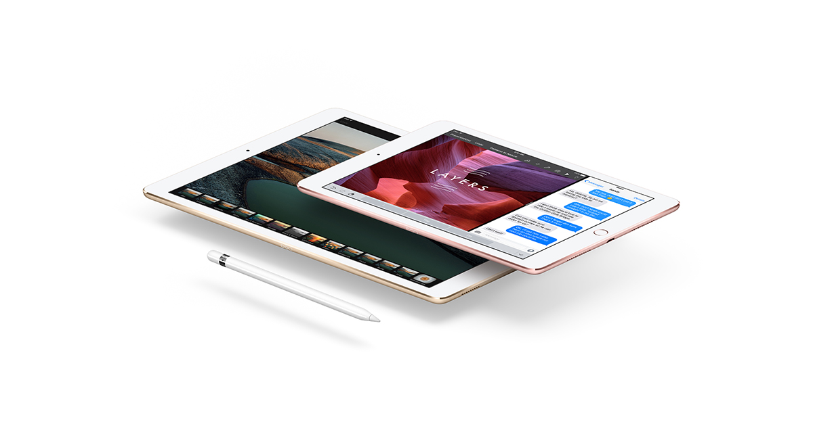

Apple lança mais um novo iphone dessa vez o 7
O iPhone 7 melhora consideravelmente as partes mais importantes da sua experiência com o iPhone. Ele traz um conjunto de câmeras completamente novo, o melhor desempenho e a maior duração de bateria até hoje, sistema de alto-falantes estéreo e tela com mais brilho e cores. Além de ser resistente à água e respingos. É poderoso em cada detalhe. E poderoso como um todo.
Ipad Pro
O iPad Pro é mais do que a próxima geração do iPad. Ele é uma visão audaciosa para a computação pessoal no mundo moderno. Seu desempenho supera a maioria dos computadores. E ele transforma tarefas complexas em algo tão simples quanto tocar, deslizar o dedo ou usar um lápis. Ambos os modelos, de 12,9 e o novo de 9,7 polegadas, são mais portáteis e versáteis do que tudo que veio antes. Descubra tudo que o iPad Pro é capaz. Você vai ver que o seu próximo computador não precisa ser um computador.
AirPods
Você configura os AirPods com apenas um toque. Eles ligam automaticamente e ficam conectados para sempre. E usar também é tão simples quanto. Eles sabem quando estão nos seus ouvidos e pausam quando são tirados. Tudo que você ouve com os AirPods vira uma experiência incrível. Seja no iPhone, Apple Watch, iPad ou Mac.